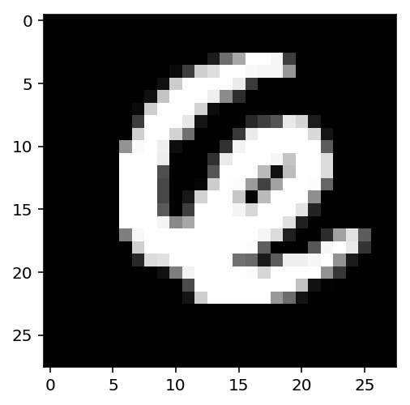
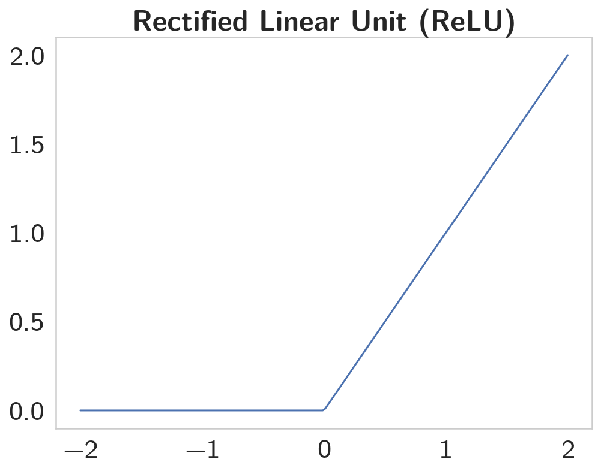
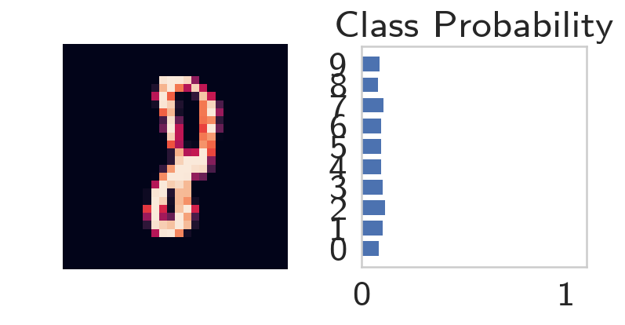

Part 2 - Neural Networks in Pytorch
Table of Contents
Introduction
Deep learning networks tend to be massive with dozens or hundreds of layers, that's where the term "deep" comes from. You can build one of these deep networks using only weight matrices as we did in the previous notebook, but in general it's very cumbersome and difficult to implement. PyTorch has a nice module nn that provides a nice way to efficiently build large neural networks.
Set Up
Python
from collections import OrderedDict
Imports
PyPi
from torch import nn
import matplotlib.pyplot as pyplot
import numpy
import seaborn
import torch
From the Nano-Degree Repository
from nano.pytorch import helper
Plotting
get_python().run_line_magic('matplotlib', 'inline')
get_python().run_line_magic('config', "InlineBackend.figure_format = 'retina'")
seaborn.set(style="whitegrid",
rc={"axes.grid": False,
"font.family": ["sans-serif"],
"font.sans-serif": ["Latin Modern Sans", "Lato"],
"figure.figsize": (8, 6)},
font_scale=2)
The First Network
Now we're going to build a larger network that can solve a (formerly) difficult problem, identifying text in an image. Here we'll use the MNIST dataset which consists of greyscale handwritten digits. Each image is 28x28 pixels. Our goal is to build a neural network that can take one of these images and predict the digit in the image.
First up, we need to get our dataset. This is provided through the torchvision package. The code below will download the MNIST dataset, then create training and test datasets for us. Don't worry too much about the details here, you'll learn more about this later. (see torchvision.dataset and torchvision.transforms).
from torchvision import datasets, transforms
Transformers:
transforms.composelets you set up multiple transforms in a pipeline.transforms.Normalizenormalizes images using the mean and standard deviation.transforms.ToTensorconverts images to Tensors.
Define a transform to normalize the data.
transform = transforms.Compose([transforms.ToTensor(),
transforms.Normalize((0.5, 0.5, 0.5), (0.5, 0.5, 0.5)),
])
Download and load the training data
torch.utils.data.DataLoader builds an iterator over the data.
trainset = datasets.MNIST('~/datasets/MNIST/', download=True, train=True, transform=transform)
trainloader = torch.utils.data.DataLoader(trainset, batch_size=64, shuffle=True)
The data-set isn't actually part of pytorch, it just downloads it from the web (unless you already downloaded it).
Downloading http://yann.lecun.com/exdb/mnist/train-images-idx3-ubyte.gz Downloading http://yann.lecun.com/exdb/mnist/train-labels-idx1-ubyte.gz Downloading http://yann.lecun.com/exdb/mnist/t10k-images-idx3-ubyte.gz Downloading http://yann.lecun.com/exdb/mnist/t10k-labels-idx1-ubyte.gz Processing... Done!
We have the training data loaded into trainloader and we make that an iterator with iter(trainloader). Later, we'll use this to loop through the dataset for training, something like:
for image, label in trainloader:
do things with images and labels
The trainloader has a batch size of 64, and shuffle=True. The batch size is the number of images we get in one iteration from the data loader and pass through our network, often called a batch. And shuffle=True tells it to shuffle the dataset every time we start going through the data loader again. But here I'm just grabbing the first batch so we can check out the data. We can see below that images is just a tensor with size (64, 1, 28, 28). So, 64 images per batch, 1 color channel, and 28x28 images.
dataiter = iter(trainloader)
images, labels = dataiter.next()
print(type(images))
print(images.shape)
print(labels.shape)
<class 'torch.Tensor'> torch.Size([64, 1, 28, 28]) torch.Size([64])
Here's what one of the images looks like.
pyplot.imshow(images[1].numpy().squeeze(), cmap='Greys_r');

Can you tell what that is? I couldn't, so I looked it up.
print(labels[1])
tensor(6)
First, let's try to build a simple network for this dataset using weight matrices and matrix multiplications. Then, we'll see how to do it using PyTorch's nn module which provides a much more convenient and powerful method for defining network architectures.
Flattening The Input
The networks you've seen so far are called fully-connected or dense networks. Each unit in one layer is connected to each unit in the next layer. In fully-connected networks, the input to each layer must be a one-dimensional vector (which can be stacked into a 2D tensor as a batch of multiple examples). However, our images are 28x28 2D tensors, so we need to convert them into 1D vectors. Thinking about sizes, we need to convert the batch of images with shape `(64, 1, 28, 28)` to a have a shape of `(64, 784)`, 784 is 28 times 28. This is typically called flattening, we flattened the 2D images into 1D vectors.
Previously you built a network with one output unit. Here we need 10 output units, one for each digit. We want our network to predict the digit shown in an image, so what we'll do is calculate probabilities that the image is of any one digit or class. This ends up being a discrete probability distribution over the classes (digits) that tells us the most likely class for the image. That means we need 10 output units for the 10 classes (digits). We'll see how to convert the network output into a probability distribution next.
Now we're going to flatten the batch of images images then build a multi-layer network with 784 input units, 256 hidden units, and 10 output units using random tensors for the weights and biases. It will use a sigmoid activation for the hidden layer and no activation function for the output layer.
out = torch.randn(64, 10)
assert out.shape == torch.Size([64, 10])
Now we have 10 outputs for our network. We want to pass in an image to our network and get out a probability distribution over the classes that tells us the likely class(es) the image belongs to.
For an untrained network that hasn't seen any data yet the output probability distribution will be a uniform distribution with equal probabilities for each class.
To calculate this probability distribution, we often use the softmax function. Mathematically this looks like
\[ \Large \sigma(x_i) = \cfrac{e^{x_i}}{\sum_k^K{e^{x_k}}} \]
What this does is squish each input \(x_i\) between 0 and 1 and normalizes the values to give you a proper probability distribution where the probabilites sum up to one.
Softmax Implementation
Implement a function softmax that performs the softmax calculation and returns probability distributions for each example in the batch. Note that you'll need to pay attention to the shapes when doing this. If you have a tensor a with shape (64, 10) and a tensor b with shape (64,), doing a/b will give you an error because PyTorch will try to do the division across the columns (called broadcasting) but you'll get a size mismatch. The way to think about this is for each of the 64 examples, you only want to divide by one value, the sum in the denominator. So you need b to have a shape of (64, 1). This way PyTorch will divide the 10 values in each row of a by the one value in each row of b. Pay attention to how you take the sum as well. You'll need to define the dim keyword in torch.sum. Setting dim=0 takes the sum across the rows while dim=1 takes the sum across the columns.
def softmax(x: numpy.ndarray) -> numpy.ndarray:
"""Calculates the softmax"""
numerator = torch.exp(x)
denominator = numerator.sum(dim=1).view(64, 1)
return numerator/denominator
Here, out should be the output of the network in the previous excercise with shape (64,10)
probabilities = softmax(out)
Does it have the right shape? Should be (64, 10)
assert probabilities.shape == out.shape
print(probabilities.shape)
torch.Size([64, 10])
Does it sum to 1?
expected = numpy.ones(64)
actual = probabilities.sum(dim=1)
print(actual)
assert numpy.allclose(expected, actual)
tensor([1.0000, 1.0000, 1.0000, 1.0000, 1.0000, 1.0000, 1.0000, 1.0000, 1.0000,
1.0000, 1.0000, 1.0000, 1.0000, 1.0000, 1.0000, 1.0000, 1.0000, 1.0000,
1.0000, 1.0000, 1.0000, 1.0000, 1.0000, 1.0000, 1.0000, 1.0000, 1.0000,
1.0000, 1.0000, 1.0000, 1.0000, 1.0000, 1.0000, 1.0000, 1.0000, 1.0000,
1.0000, 1.0000, 1.0000, 1.0000, 1.0000, 1.0000, 1.0000, 1.0000, 1.0000,
1.0000, 1.0000, 1.0000, 1.0000, 1.0000, 1.0000, 1.0000, 1.0000, 1.0000,
1.0000, 1.0000, 1.0000, 1.0000, 1.0000, 1.0000, 1.0000, 1.0000, 1.0000,
1.0000])
Building networks with PyTorch
PyTorch provides a module nn that makes building networks much simpler. Here I'll show you how to build the same one as above with 784 inputs, 256 hidden units, 10 output units and a softmax output.
The Class Definition
class Network(nn.Module):
def __init__(self):
super().__init__()
# Inputs to hidden layer linear transformation
self.hidden = nn.Linear(784, 256)
# Output layer, 10 units - one for each digit
self.output = nn.Linear(256, 10)
# Define sigmoid activation and softmax output
self.sigmoid = nn.Sigmoid()
self.softmax = nn.Softmax(dim=1)
def forward(self, x):
# Pass the input tensor through each of our operations
x = self.hidden(x)
x = self.sigmoid(x)
x = self.output(x)
x = self.softmax(x)
return x
Let's go through this bit by bit.
Inherit from nn.Module
class Network(nn.Module):
Here we're inheriting from nn.Module. Combined with super().__init__() this creates a class that tracks the architecture and provides a lot of useful methods and attributes. It is mandatory to inherit from nn.Module when you're creating a class for your network. The name of the class itself can be anything.
The Hidden Layer
self.hidden = nn.Linear(784, 256)
This line creates a module for a linear transformation, \(x\mathbf{W} + b\), with 784 inputs and 256 outputs and assigns it to self.hidden. The module automatically creates the weight and bias tensors which we'll use in the forward method. You can access the weight and bias tensors once the network once it's create at net.hidden.weight and net.hidden.bias.
The Output Layer
self.output = nn.Linear(256, 10)
Similarly, this creates another linear transformation with 256 inputs and 10 outputs.
The Activation Layers
The Forward-Pass Method
def forward(self, x):
PyTorch networks created with nn.Module must have a forward method defined. It takes in a tensor x and passes it through the operations you defined in the __init__ method.
x = self.hidden(x)
x = self.sigmoid(x)
x = self.output(x)
x = self.softmax(x)
Here the input tensor x is passed through each operation and reassigned to x. We can see that the input tensor goes through the hidden layer, then a sigmoid function, then the output layer, and finally the softmax function. It doesn't matter what you name the variables here, as long as the inputs and outputs of the operations match the network architecture you want to build. The order in which you define things in the __init__ method doesn't matter, but you'll need to sequence the operations correctly in the forward method.
Instantiating the Model
Now we can create a Network object.
Here's what the text representation for an instance looks like.
model = Network()
print(model)
Network( (hidden): Linear(in_features=784, out_features=256, bias=True) (output): Linear(in_features=256, out_features=10, bias=True) (sigmoid): Sigmoid() (softmax): Softmax() )
You can define the network somewhat more concisely and clearly using the torch.nn.functional module. This is the most common way you'll see networks defined as many operations are simple element-wise functions. We normally import this module as F, import torch.nn.functional as F.
import torch.nn.functional as F
class Network(nn.Module):
def __init__(self):
super().__init__()
# Inputs to hidden layer linear transformation
self.hidden = nn.Linear(784, 256)
# Output layer, 10 units - one for each digit
self.output = nn.Linear(256, 10)
def forward(self, x):
# Hidden layer with sigmoid activation
x = F.sigmoid(self.hidden(x))
# Output layer with softmax activation
x = F.softmax(self.output(x), dim=1)
return x
Activation functions
So far we've only been looking at the softmax activation, but in general any function can be used as an activation function. The only requirement is that for a network to approximate a non-linear function, the activation functions must be non-linear. Here are a few more examples of common activation functions: Tanh (hyperbolic tangent), and ReLU (rectified linear unit).
In practice, the ReLU function is used almost exclusively as the activation function for hidden layers.
Let's Build a Network
We're going to create a network with 784 input units, a hidden layer with 128 units and a ReLU activation, then a hidden layer with 64 units and a ReLU activation, and finally an output layer with a softmax activation as shown above. You can use a ReLU activation with the nn.ReLU module or F.relu function.
figure, axe = pyplot.subplots()
x = numpy.linspace(-2, 2, num=200)
y = [max(0, element) for element in x]
axe.set_title("Rectified Linear Unit (ReLU)", weight="bold")
plot = axe.plot(x, y)

The ReLU is a function with the form of \(y = max(0, x)\).
We're going to create a network with 784 input units, a hidden layer with 128 units and a ReLU activation, then a hidden layer with 64 units and a ReLU activation, and finally an output layer with a softmax activation as shown above. You can use a ReLU activation with the nn.ReLU module or F.relu function.
class ReluNet(nn.Module):
"""Creates a network with two hidden layers
Each hidden layer will use ReLU activation
The output will use softmax activation
Args:
inputs: number of input nodes
hidden_one: number of nodes in the first hidden layer
hidden_two: number of nodes in the second layer
outputs: number of nodes in the output layer
"""
def __init__(self, inputs: int=784,
hidden_one: int=128,
hidden_two: int=64,
outputs: int=10):
super().__init__()
self.input_to_hidden_one = nn.Linear(inputs, hidden_one)
self.hidden_one_to_hidden_two = nn.Linear(hidden_one, hidden_two)
self.hidden_two_to_output = nn.Linear(hidden_two, outputs)
self.relu = nn.ReLU()
self.softmax = nn.Softmax(dim=1)
return
def forward(self, x: torch.Tensor) -> torch.Tensor:
"""Does the forward-pass through the network"""
x = self.relu(self.input_to_hidden_one(x))
x = self.relu(self.hidden_one_to_hidden_two(x))
return self.softmax(self.hidden_two_to_output(x))
model = ReluNet()
print(model)
ReluNet( (input_to_hidden_one): Linear(in_features=784, out_features=128, bias=True) (hidden_one_to_hidden_two): Linear(in_features=128, out_features=64, bias=True) (hidden_two_to_output): Linear(in_features=64, out_features=10, bias=True) (relu): ReLU() (softmax): Softmax() )
Initializing weights and biases
The weights and such are automatically initialized for you, but it's possible to customize how they are initialized. The weights and biases are tensors attached to the layer you defined, you can get them with model.fc1.weight for instance.
print(model.hidden_one_to_hidden_two.weight)
print(model.hidden_one_to_hidden_two.bias)
Parameter containing:
tensor([[-0.0489, -0.0440, -0.0060, ..., -0.0246, -0.0269, 0.0096],
[ 0.0739, 0.0338, -0.0180, ..., -0.0785, -0.0467, -0.0290],
[-0.0117, -0.0637, 0.0105, ..., 0.0158, 0.0126, -0.0255],
...,
[ 0.0077, -0.0302, 0.0320, ..., -0.0089, -0.0645, -0.0595],
[-0.0269, -0.0370, -0.0317, ..., 0.0258, 0.0334, 0.0240],
[ 0.0227, 0.0195, 0.0731, ..., 0.0510, 0.0119, -0.0791]],
requires_grad=True)
Parameter containing:
tensor([-0.0820, -0.0675, 0.0483, -0.0245, 0.0227, 0.0306, -0.0397, 0.0602,
0.0737, -0.0517, -0.0539, 0.0142, 0.0129, -0.0251, 0.0813, 0.0114,
0.0445, -0.0508, 0.0709, -0.0684, -0.0822, 0.0084, -0.0751, 0.0594,
-0.0248, 0.0041, 0.0369, -0.0762, -0.0170, 0.0306, -0.0295, -0.0396,
-0.0442, -0.0408, 0.0189, -0.0410, 0.0593, -0.0696, -0.0551, -0.0633,
0.0681, 0.0720, 0.0678, 0.0486, 0.0795, -0.0340, 0.0176, 0.0837,
-0.0152, 0.0514, -0.0676, 0.0065, 0.0309, -0.0441, -0.0364, -0.0513,
-0.0145, -0.0328, 0.0282, 0.0612, -0.0549, -0.0411, 0.0456, 0.0129],
requires_grad=True)
For custom initialization, we want to modify these tensors in place. These are actually autograd Variables, which perform automatic differentiation for us, so we need to get back the actual tensors with model.hidden_one_to_hidden_two.weight.data. Once we have the tensors, we can fill them with zeros (for biases) or random normal values.
Set biases to all zeros:
model.input_to_hidden_one.bias.data.fill_(0)
Sample from random normal with standard dev = 0.01
model.input_to_hidden_one.weight.data.normal_(std=0.01)
Forward pass
Now that we have a network, let's see what happens when we pass in an image.
Grab some data
This next block grabs one batch of image data.
batch = iter(trainloader)
images, labels = batch.next()
Now we need to resize the images into a 1D vector. The new shape is (batch size, color channels, image pixels).
images.resize_(len(images), 1, 28*28)
Forward pass through the network
image = images[0, :]
probabilities = model.forward(image)
highest = probabilities.argmax()
print(highest)
print(probabilities[:, highest])
tensor(2) tensor([0.1173], grad_fn=<SelectBackward>)
It looks like we're predicting a 2.
helper.view_classify(image.view(1, 28, 28), probabilities)

As you can see above, our network has basically no idea what this digit is. It's because we haven't trained it yet so all the weights are random.
Using nn.Sequential
PyTorch provides a convenient way to build networks like this where a tensor is passed sequentially through operations, nn.Sequential (documentation). This is how you use Sequential to build the equivalent network.
Hyperparameters For Our Network
input_size = 784
hidden_sizes = [128, 64]
output_size = 10
Build a Feed-Forward Network
model = nn.Sequential(nn.Linear(input_size, hidden_sizes[0]),
nn.ReLU(),
nn.Linear(hidden_sizes[0], hidden_sizes[1]),
nn.ReLU(),
nn.Linear(hidden_sizes[1], output_size),
nn.Softmax(dim=1))
print(model)
Sequential( (0): Linear(in_features=784, out_features=128, bias=True) (1): ReLU() (2): Linear(in_features=128, out_features=64, bias=True) (3): ReLU() (4): Linear(in_features=64, out_features=10, bias=True) (5): Softmax() )
Forward Pass
images, labels = next(iter(trainloader))
images.resize_(images.shape[0], 1, 784)
image = images[0, :]
probabilities = model.forward(image)
helper.view_classify(image.view(1, 28, 28), probabilities)

The operations are availble by passing in the appropriate index. For example, if you want to get the first Linear operation and look at the weights, you'd use model[0].
print(model[0])
print(model[0].weight)
Linear(in_features=784, out_features=128, bias=True)
Parameter containing:
tensor([[-0.0229, 0.0106, 0.0077, ..., 0.0079, -0.0073, -0.0182],
[-0.0066, 0.0245, 0.0241, ..., 0.0344, 0.0281, 0.0034],
[-0.0349, 0.0127, 0.0119, ..., -0.0351, 0.0160, 0.0235],
...,
[-0.0328, 0.0114, 0.0204, ..., 0.0265, -0.0114, 0.0215],
[-0.0214, -0.0027, -0.0279, ..., -0.0297, -0.0112, -0.0189],
[ 0.0217, 0.0208, -0.0328, ..., 0.0341, 0.0270, -0.0198]],
requires_grad=True)
You can also pass in an OrderedDict to name the individual layers and operations, instead of using incremental integers. Note that dictionary keys must be unique, so each operation must have a different name.
model = nn.Sequential(OrderedDict([
('input_to_hidden', nn.Linear(input_size, hidden_sizes[0])),
('relu_1', nn.ReLU()),
('hidden_to_hidden', nn.Linear(hidden_sizes[0], hidden_sizes[1])),
('relu_2', nn.ReLU()),
('output', nn.Linear(hidden_sizes[1], output_size)),
('softmax', nn.Softmax(dim=1))]))
print(model)
Sequential( (input_to_hidden): Linear(in_features=784, out_features=128, bias=True) (relu_1): ReLU() (hidden_to_hidden): Linear(in_features=128, out_features=64, bias=True) (relu_2): ReLU() (output): Linear(in_features=64, out_features=10, bias=True) (softmax): Softmax() )
print(model[0])
print(model.input_to_hidden)
assert model[0] is model.input_to_hidden
Linear(in_features=784, out_features=128, bias=True) Linear(in_features=784, out_features=128, bias=True)